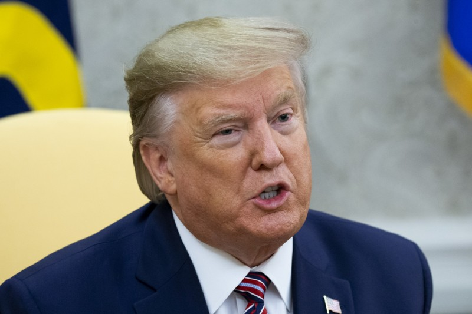
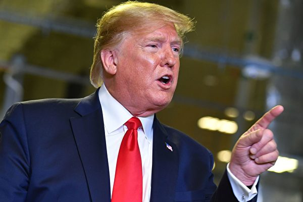
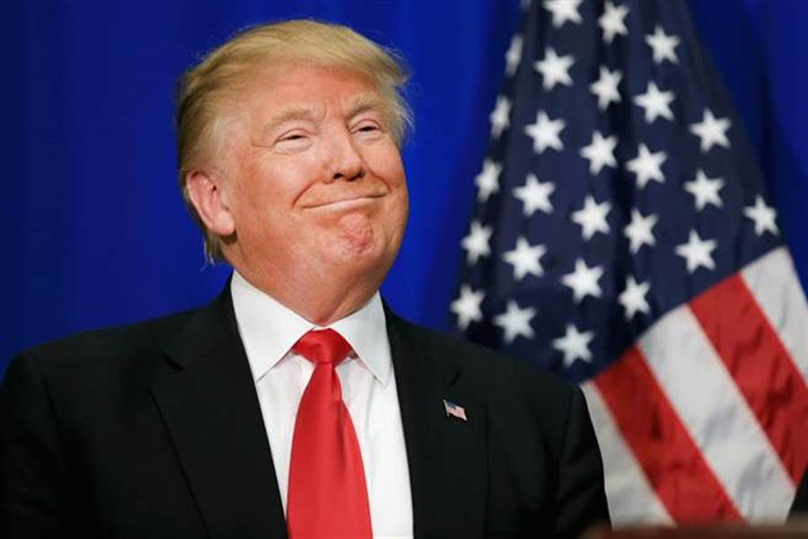

紐時：川普知後果 無法不簽香港人權法案
（中央社華盛頓27日綜合外電報導）美國總統川普今天簽署「香港人權與民主法案」，
釋出即便他正與中方協商貿易協議之際、仍支持香港民主人士的信號；美國媒體分析，
川普知道阻擋法案的後果，所以不得不簽署。
「香港人權與民主法案」，不只要求美國政府需制裁在香港侵害人權的港府、中方官員，
還要求國務院每年檢視香港的特殊自治地位，判斷是否享有美國在貿易及其他方面的特殊待遇，
一旦美國不再認定香港仍具特殊自治地位，香港就會失去相較大陸內地更佳的與美貿易待遇。


